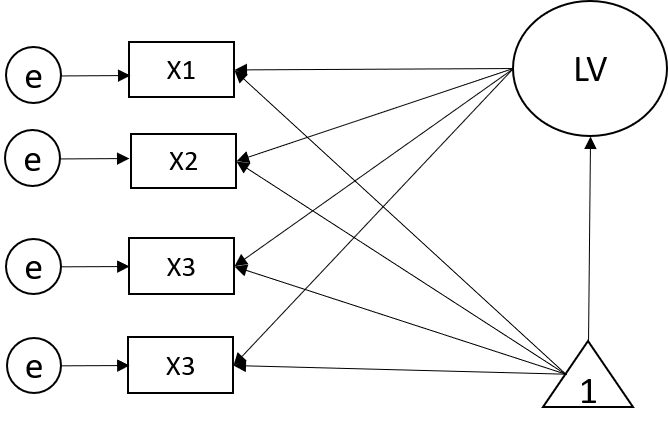
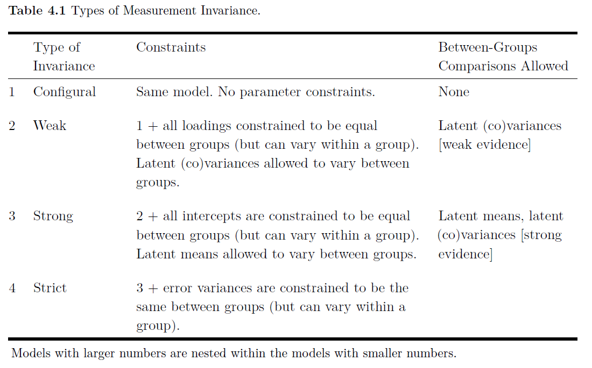

Multigroup Structural Equation Modeling: Bagian 6
Teknik Analisis Data: Program Doktor Psikologi
Universitas Airlangga
2026-03-28
Multigroup SEM: untuk apa?
Invariance apakah dalam kondisi yang beragam ketika melakukan pengukuran, alat ukur selalu mengukur atribut ukur yang sama
Measurement invariance dua atau lebih kelompok memiliki model pengukuran yang sama, yaitu variabel laten dalam model pengukuran adalah konstruk yang sama
Ketika membandingkan model pengukuran di dua atau lebih kelompok yang berbeda, untuk menyimpulkan terjadinya invariance, maka peneliti akan menginginkan chi-square (X2) yang p-valuenya ≤ α
Kalau kita berniat melakukan perbandingan performa alat ukur di dua kelompok sampel yang berbeda, maka kita lebih baik menggunakan means-covariance matrix bukan variance-covariance matrix ingat t-test dan anova
Means dan intercept
Kalau kita masukkan mean variabel laten ke dalam model, maka **_intercept_nya juga harus dimasukkan dalam model**
Mean dan intercept adalah ukuran lokasi variabel, dimana…
- Mean adalah komponen common factor
- Intercept adalah komponen unique factor
Intercept disimbolkan dengan segitiga dan
- Hanya boleh “ketemu” dengan panah uni-directional dan sifatnya backwards

Jenis-jenis measurement invariance
- Configural
- Jenis ini adalah yang paling dasar, yang mengasumsikan bahwa model memiliki struktur yang sama di semua kelompok
- Oleh karena itu, semua kelompok harus memiliki jumlah faktor/variabel laten dan jumlah variabel indikator/observed yang sama
- Tidak ada ketentuan bahwa parameter di dalam model harus setara di semua kelompok tidak ada between-group comparison
- Untuk mengeksekusi configural invariance tinggal menambahkan
grouping variablediJASPpada bagian options
- Weak/metric
- Factor loading harus sama pada setiap kelompok, tetapi varians variabel laten boleh bervariasi
- Dinamai weak karena asumsinya masih lemah untuk menyimpulkan bahwa faktor laten ekuivalen di semua kelompok
- Untuk mengeksekusinya tambahkan
grouping variablediJASPdan tik pilihanloadingspadaequality constraints
Jenis-jenis measurement invariance
- Strong/scalar
- Selain factor loading harus sama, strong invariance mensyaratkan intercept harus sama juga
- Ketika membatasi/constraining intercept, maka means boleh bervariasi di berbagai kelompok
- Dengan asumsi strong invariance ekuivalensi variabel laten lebih didukung bukti yang kuat
- Untuk mengeksekusinya tambahkan
grouping variablediJASPdan tik pilihanloadingsdaninterceptpadaequality constraints
- Strict/residuals
- Selain factor loading dan intercept harus sama, strict invariance mensyaratkan varians error/residual sama juga
- Biasanya asumsi ini tidak terlalu diperlukan untuk membandingkan variabel laten di masing-masing kelompok
- Untuk mengeksekusinya tambahkan
grouping variablediJASPdan tik pilihanloadings,intercept, danresidualspadaequality constraints
Jenis-jenis measurement invariance
- Homogenitas varians variabel laten
- Untuk melihat apakah varians variabel laten setara di masing-masing kelompok
- Kalau tidak terpenuhi berarti kelompok dengan varians variabel laten yang lebih kecil menggunakan rentang konstruk yang lebih sempit
- Untuk mengeksekusinya pada
grouping variablediJASPtik pilihanlatent variances
- Homogenitas factor means
- Untuk melihat apakah ada perbedaan mean variabel laten di masing-masing kelompok
- Prosedur yang sama dengan
anovaataut-test - Untuk mengeksekusinya pada
grouping variablediJASPtik pilihanmeans
Evaluasi measurement invariance
Umumnya ada dua cara yaitu
- Pendekatan statistik
- Karena struktur data yang hirarkis, maka untuk mengevaluasi invariance perlu beberapa langkah
- Dalam pendekatan statistik, peneliti dapat mengevaluasi perubahan X2 (ΔX2) ketika membandingkan model antar kelompok
- Seharusnya ketika pembatasan model ditambah, maka ΔX2 tidak signifikan, sehingga seharusnya p-value dari ΔX2 > α (misalnya 0.05)
- Pendekatan modeling
- Pendekatan modeling menggunakan approximate fit indices (AFI) untuk menyimpulkan invariance
- Yang bisa digunakan adalah comparative fit index (CFI) dan McDonald’s noncentrality fit index (MFI), sehingga ketika keduanya mendekati 1, kita dapat simpulkan invariance ✅

Demonstrasi multigroup SEM
Klik untuk unduh datasetnya disini
Atau pada repositori, unduh Dataset Contoh Multigroup SEM

TUGAS 6 (terakhir 🙏): Mencoba multigroup SEM
Unduh Dataset Latihan SEM
Unduh Kamus Data disini
Cek measurement invariance pada skala right-wing authoritarianism antara laki-laki dan perempuan
Export datasetnya menjadi
.htmkemudian
Unggah tugasnya di sini

Terima kasih banyak! 😉

Paparan disusun dengan menggunakan dan Quarto dengan template dari UNAIR Theme.